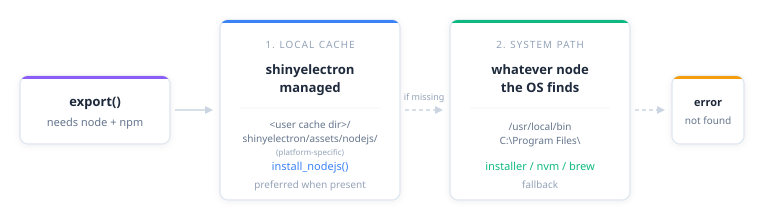

Packaging a Shiny app into an installer needs Node.js. Most R and Python users do not have Node.js on their machines and do not want to install it system-wide just to ship one app. shinyelectron solves the awkward middle by downloading a copy of Node into your user cache: no admin rights, no conflict with anything else, and you can pin or remove it cleanly later.
If you already have a recent Node.js LTS (22 or higher) on your PATH, that works too. shinyelectron uses whichever copy it can find.
Why a local install
A local install lives in your user cache rather than under /usr/local or C:\Program Files. Four things follow from that.
| Benefit | What it means |
|---|---|
| No admin rights | No sudo or Administrator prompts during install |
| Isolation | Stays out of the way of any system Node.js or other projects |
| Pinnability | Lock to a specific version when reproducibility matters |
| Portability | Works on locked-down machines where a system install is not allowed |
The minimum supported version is Node.js 22.0.0 because Electron 41 requires it. shinyelectron’s installer always defaults to the latest LTS, which is well above that floor.
Installing
install_nodejs() fetches the latest LTS build from nodejs.org, verifies the checksum, and unpacks it into the cache.
i Detecting latest Node.js LTS version...
v Latest LTS: v22.11.0
-- Installing Node.js v22.11.0 ----------------------------------------------
i Platform: mac
i Architecture: arm64
i Fetching checksums...
i Downloading from https://nodejs.org/dist/v22.11.0/node-v22.11.0-darwin-arm64.tar.gz
v Checksum verified
i Extracting archive...
v Node.js v22.11.0 installed successfully
i Location: /Users/you/Library/Caches/shinyelectron/assets/nodejs/v22.11.0/darwin-arm64
i shinyelectron will automatically use this installationTwo arguments worth knowing:
# Pin a specific version for reproducible builds
install_nodejs(version = "22.11.0")
# Force a fresh download when a previous one is corrupt
install_nodejs(force = TRUE)You can install several versions side by side; they sit in separate directories in the cache.
install_nodejs(version = "22.11.0")
install_nodejs(version = "20.18.0")When more than one is present, the highest semantic version wins at resolution time. Install order does not matter.
Which Node.js shinyelectron uses
Whenever shinyelectron needs to run node or npm, it picks one in this order:
- The local install under the shinyelectron cache. If several local versions are present, the highest wins.
-
The system Node.js found on
PATH. - If neither is available, the call fails with a message naming both options.

sitrep_electron_system() shows what it finds:
-- System Requirements Report ------------------------------------------------
v Platform: darwin
v Architecture: arm64
v Local Node.js (shinyelectron): v22.11.0
Other versions: 20.18.0
v Active Node.js: v22.11.0 (local)
v npm: v10.9.0Auto-install from _shinyelectron.yml
If you would rather have export() install Node.js on demand, set auto_install: true. shinyelectron will fetch Node when it cannot find one and then continue the build.
nodejs:
auto_install: truePin the version too, when you want it:
nodejs:
version: "22.11.0"
auto_install: trueOpt-in only
Auto-install is off by default. shinyelectron does not download anything without explicit consent: either
auto_install: truehere, or a manualinstall_nodejs()call.
Cache layout
Everything lives under the shinyelectron user cache, organised by version and then platform/architecture. The base directory comes from rappdirs::user_cache_dir("shinyelectron"), so the exact path is platform-specific:
| Platform | Typical cache base |
|---|---|
| macOS | ~/Library/Caches/shinyelectron/assets/ |
| Linux | ~/.cache/shinyelectron/assets/ |
| Windows | %LOCALAPPDATA%\shinyelectron\Cache\assets\ |
Call cache_dir() to get the actual path on your machine. Inside it, the Node.js layout looks like this:
{cache_dir()}/nodejs/
|-- v22.11.0/
| `-- darwin-arm64/ # macOS Apple Silicon
| |-- bin/
| | |-- node
| | |-- npm
| | `-- npx
| |-- include/
| `-- lib/
|-- v20.18.0/
| `-- win-x64/ # Windows 64-bit
| |-- node.exe
| |-- npm.cmd
| `-- npx.cmd
`-- ...The platform and architecture come from Sys.info() and map to Node.js’s own naming:
| Detected (R) | Node.js build |
|---|---|
| Darwin / arm64 | darwin-arm64 |
| Darwin / x86_64 | darwin-x64 |
| Windows / arm64 | win-arm64 |
| Windows / x86_64 | win-x64 |
| Linux / arm64 | linux-arm64 |
| Linux / x86_64 | linux-x64 |
Download integrity
Every download is checked against the official SHA256 manifest before it is unpacked:
- Fetch
SHASUMS256.txtfrom nodejs.org. - Download the Node.js archive.
- Compute the SHA256 of the downloaded file.
- Compare against the expected checksum.
- Abort on any mismatch; the archive is never extracted.
This catches both ordinary corruption and anything tampered with in transit.
Clearing the cache
Remove every Node.js install shinyelectron has downloaded:
cache_clear("nodejs")v Cleared nodejs cacheRemove everything shinyelectron has cached (Node.js, R/Python runtimes, npm modules):
cache_clear("all")Useful when an install is broken, when disk space is tight, or when you want to test a fresh download from scratch.
Local versus system
| Aspect | Local (shinyelectron) | System |
|---|---|---|
| Installs with | install_nodejs() |
OS package manager or nodejs.org |
| Lives under | cache_dir() |
/usr/local, C:\Program Files\nodejs
|
| Admin rights | No | Usually yes |
| Updates | install_nodejs() |
OS package manager |
| Multiple versions | Yes | Usually one |
| Affects other tools | No | Yes |
Prefer the local install for most work. It is isolated, reproducible, and cannot be broken by an OS update. The system install makes sense when your team standardises on a Node version that is already installed everywhere.
Troubleshooting
Network error during download
x Failed to download Node.js
x URL: https://nodejs.org/dist/v22.11.0/node-v22.11.0-darwin-arm64.tar.gz
x Error: could not resolve hostCheck your connection. If you are behind a corporate proxy, make sure R sees it (set HTTPS_PROXY in your .Renviron). If nodejs.org itself is unreachable, retry later.
Checksum mismatch
x Checksum verification failed
x Downloaded file may be corruptedForce a re-download:
install_nodejs(force = TRUE)If the mismatch persists, nodejs.org may be serving a bad mirror. Wait and retry, or pin to a known-good earlier version with version = "...".
Wrong architecture
Symptom: Node.js runs but Electron fails with an architecture mismatch (for example, node was compiled for darwin-x64 but the system is darwin-arm64).
The cached install is the wrong build for your machine. Clear and reinstall:
sitrep_electron_system()
cache_clear("nodejs")
install_nodejs()Local install skipped
Symptom: shinyelectron keeps reaching for the system Node.js even though install_nodejs() reported success.
The local install is probably incomplete. Clear and reinstall, then verify with sitrep_electron_system():
cache_clear("nodejs")
install_nodejs()
sitrep_electron_system()Next steps
- Getting Started: first-time walkthrough.
-
Configuration: full
_shinyelectron.ymlreference. - Troubleshooting: diagnose other build issues.